Platform
GM B-body
45 generations of 21 models by Oldsmobile, Pontiac, Buick, Cadillac and Chevrolet, 1932–1992.
The cars
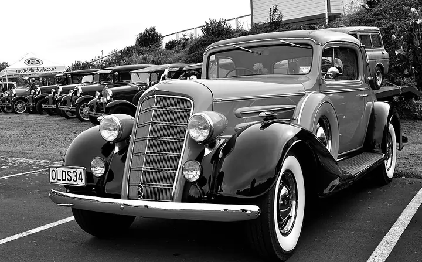
Oldsmobile L-Series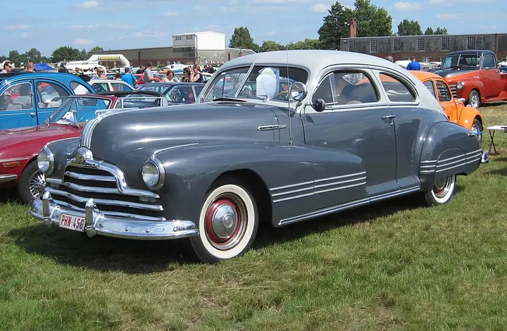
Pontiac Streamliner Buick Century · First generation (1936–1942)
Buick Century · First generation (1936–1942)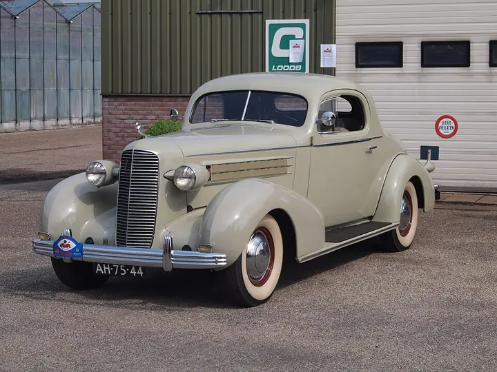
Cadillac Series 60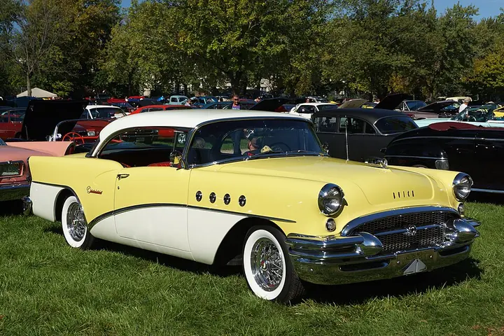
Buick Century · Second generation (1954–1958) Oldsmobile 88 · Second generation (1954–1956)
Oldsmobile 88 · Second generation (1954–1956) Oldsmobile 88 · Third generation (1957–1958)
Oldsmobile 88 · Third generation (1957–1958)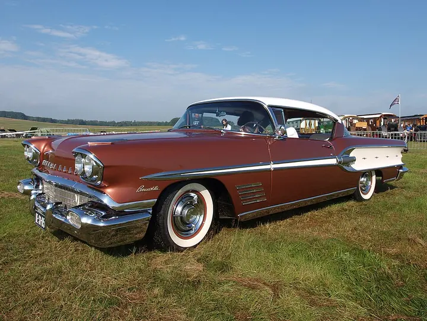
Pontiac Bonneville · First generation (1958)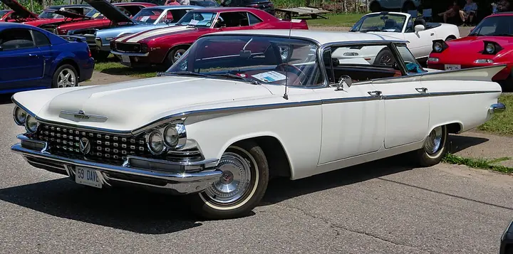
Buick LeSabre · First generation (1959–1960)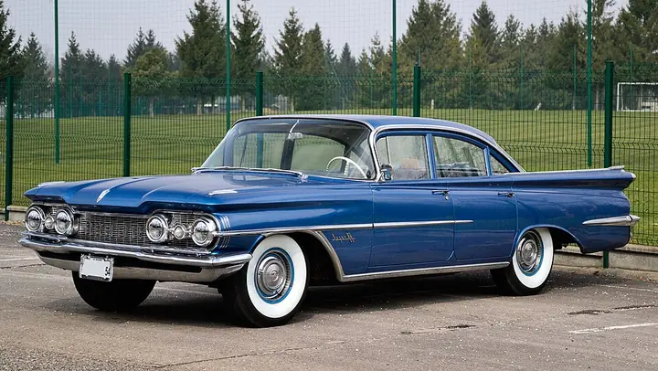
Oldsmobile 88 · Fourth generation (1959–1960)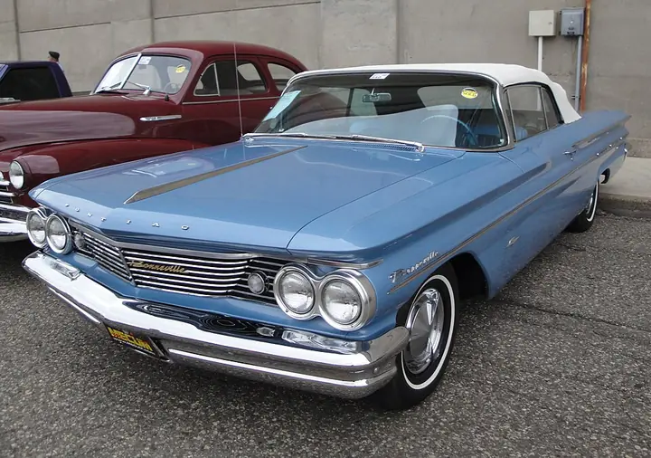
Pontiac Bonneville · Second generation (1959–1960)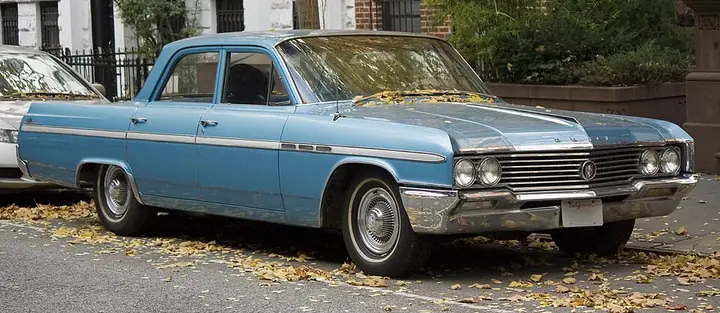
Buick LeSabre · Second generation (1961–1964)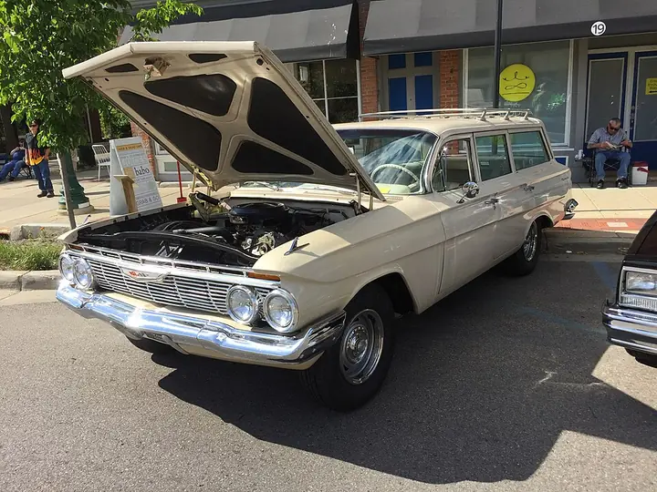
Chevrolet Brookwood · Third generation (1961)- Chevrolet Parkwood · 1961
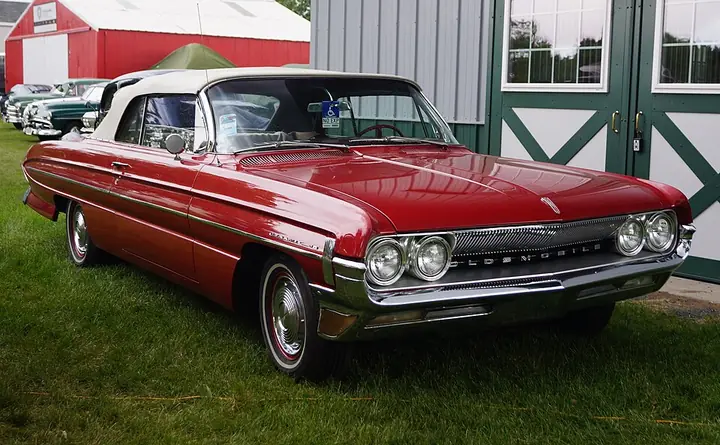
Oldsmobile 88 · Fifth generation (1961–1964)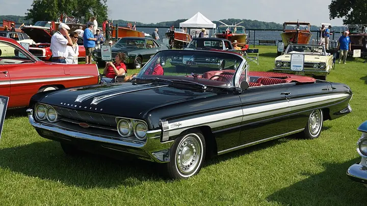
Oldsmobile Starfire · First generation (1961–1966) Pontiac Bonneville · Third generation (1961–1964)
Pontiac Bonneville · Third generation (1961–1964)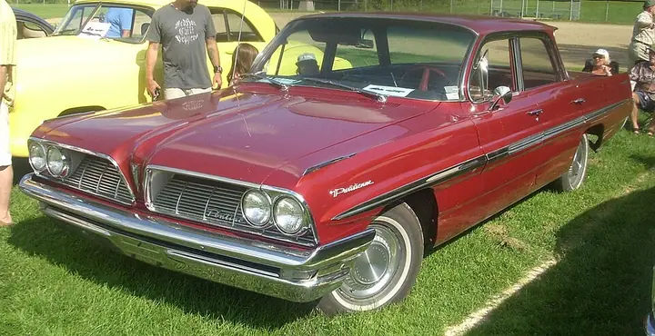
Pontiac Parisienne · Second generation: 1961–1964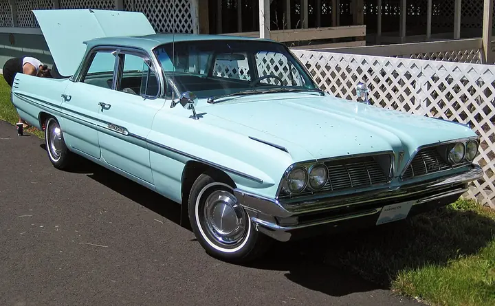
Pontiac Star Chief · Fifth generation (1961-1964) Pontiac Grand Prix · First generation (1962–1964)
Pontiac Grand Prix · First generation (1962–1964)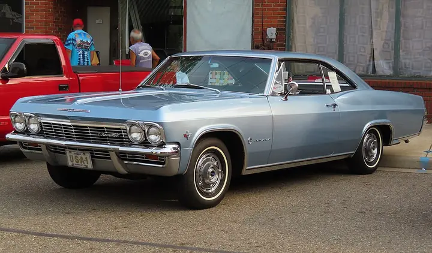
Chevrolet Impala · Fourth generation (1965–1970) Buick LeSabre · Third generation (1965–1970)
Buick LeSabre · Third generation (1965–1970) Pontiac Bonneville · Fourth generation (1965–1970)
Pontiac Bonneville · Fourth generation (1965–1970)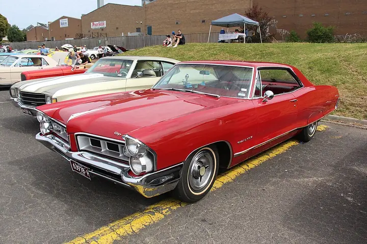
Pontiac Grand Prix · Second generation (1965–1968)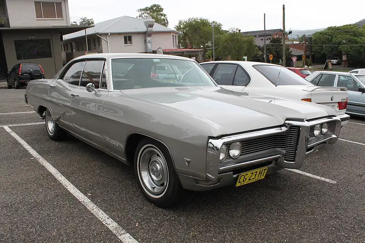
Pontiac Parisienne · Third generation: 1965–1970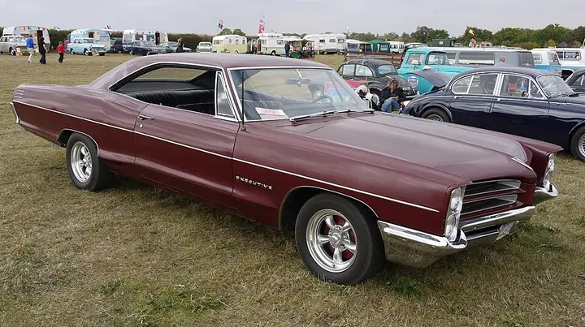
Pontiac Star Chief · Sixth generation (1965-1966)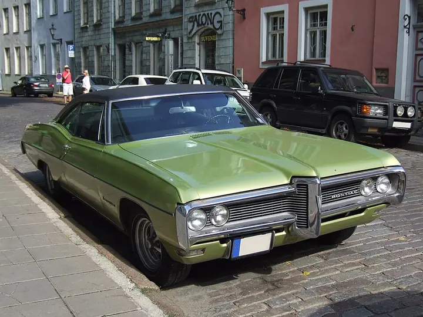
Pontiac Executive Chevrolet Brookwood · Fourth generation (1969–1972)
Chevrolet Brookwood · Fourth generation (1969–1972)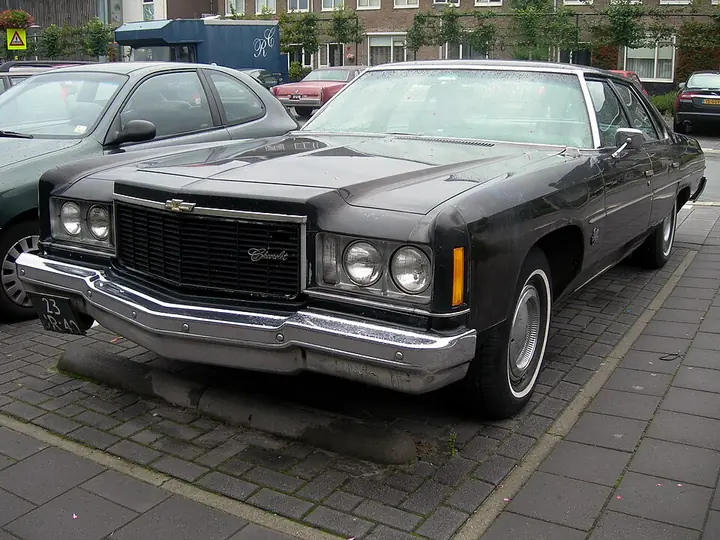
Chevrolet Bel Air · Seventh generation (1971–1975)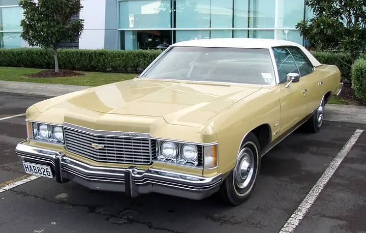
Chevrolet Impala · Fifth generation (1971–1976)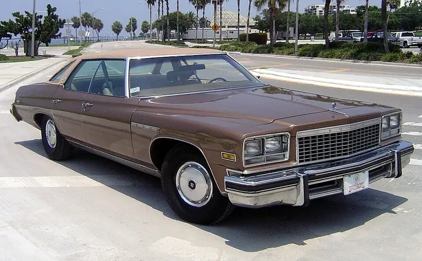
Buick LeSabre · Fourth generation (1971–1976)- Chevrolet Biscayne · Fifth generation (1971–1975)
- Oldsmobile 88 · Seventh generation (1971–1976)
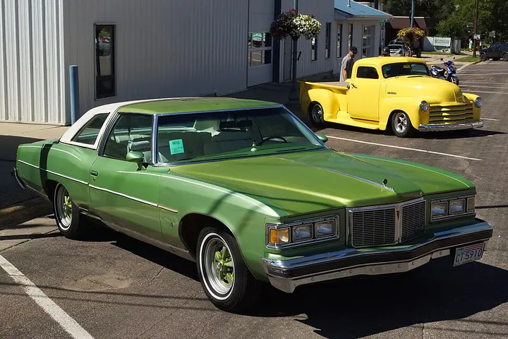
Pontiac Bonneville · Fifth generation (1971–1976) Pontiac Grand Ville
Pontiac Grand Ville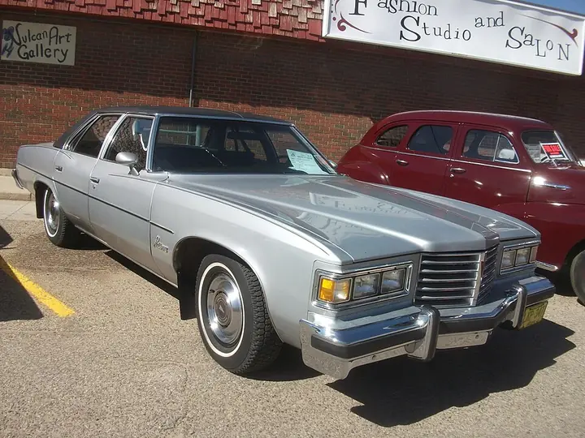
Pontiac Parisienne · Fourth generation: 1971–1976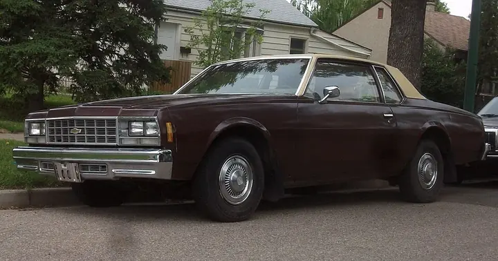
Chevrolet Bel Air · Eighth generation (1977–1981)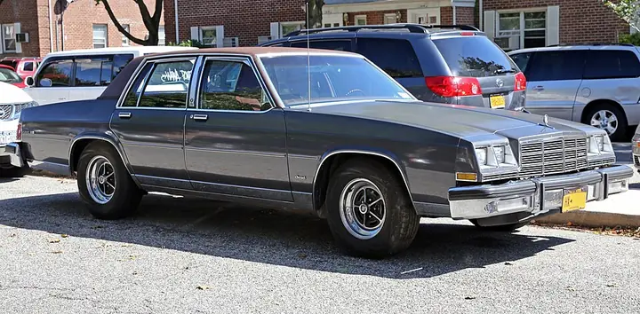
Buick LeSabre · Fifth generation (1977–1985)- Buick Riviera · Fifth generation (1977–1978)
 Oldsmobile 88 · Eighth generation (1977–1985)
Oldsmobile 88 · Eighth generation (1977–1985)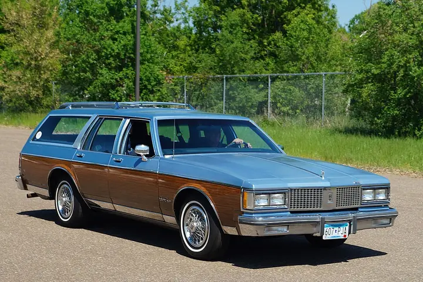
Oldsmobile Custom Cruiser · Second generation (1977–1990) Pontiac Bonneville · Sixth generation (1977–1981)
Pontiac Bonneville · Sixth generation (1977–1981)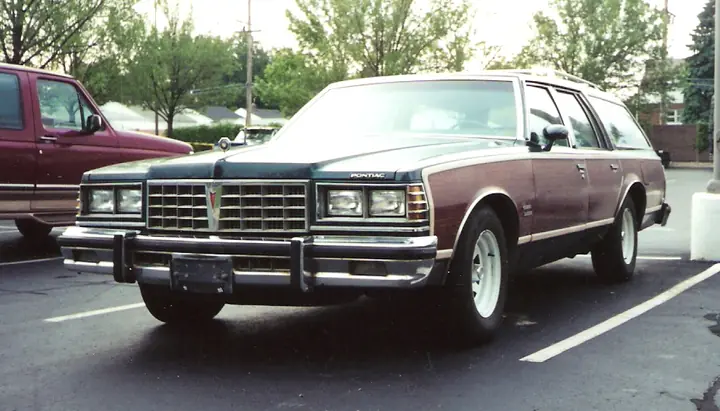
Pontiac Grand Safari · Second generation (1977–1978) Pontiac Parisienne · Fifth generation: 1977–1986
Pontiac Parisienne · Fifth generation: 1977–1986 Oldsmobile Custom Cruiser · Third generation (1991–1992)
Oldsmobile Custom Cruiser · Third generation (1991–1992)